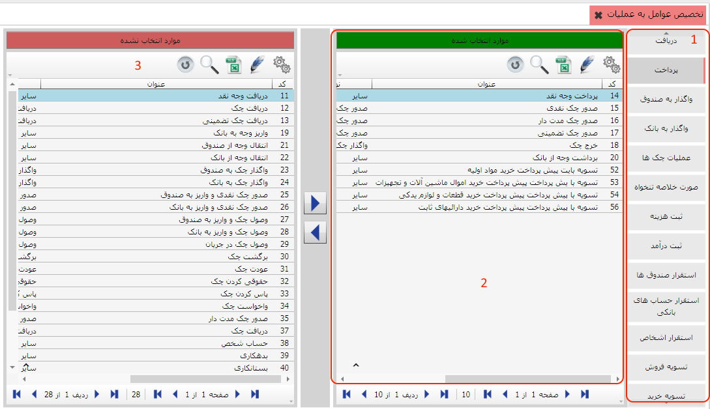

و
و
 می توانید یک عامل را به یک عملیات اختصاص دهید یا از حالت تخصیص خارج کنید.
می توانید یک عامل را به یک عملیات اختصاص دهید یا از حالت تخصیص خارج کنید.
بعد از تعریف عملیات و عوامل گردش خزانه، باید عوامل مورد نیاز هر عملیات را به آن اختصاص دهید. همان طور که قبلا ذکر شد هر عامل می تواند به چندین عملیات تخصیص داده شود و هر عملیات نیز می تواند شامل چند عامل باشد. برای تخصیص عوامل به عملیات روی این منو در قسمت اطلاعات پایه و عوامل گردش خزانه کلیک کنید تا صفحه زیر نمایش داده شود:

این صفحه شامل سه قسمت می باشد:
لیست عملیات موجود در قسمت 1 نمایش داده شده است که در اینجا عملیات پرداخت
انتخاب شده است. در قسمت 2 لیست عوامل تخصیص یافته به این عملیات نشان داده
شده است که شامل پرداخت وجه نقد، صدور چک نقدی و ... می باشد و در قسمت 3
لیست سایر عوامل تخصیص نیافته به این عملیات قرار گرفته است. با دو کلید
و
می توانید یک عامل را به یک عملیات اختصاص دهید یا از حالت تخصیص خارج کنید.